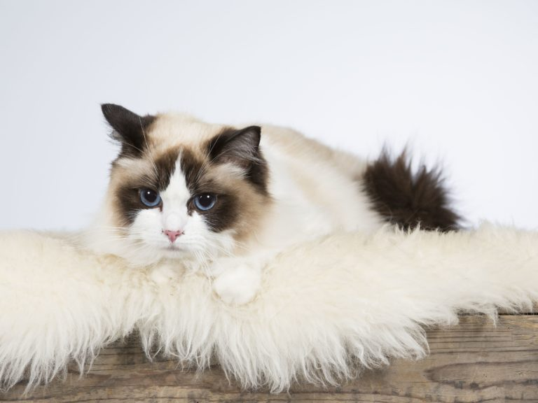
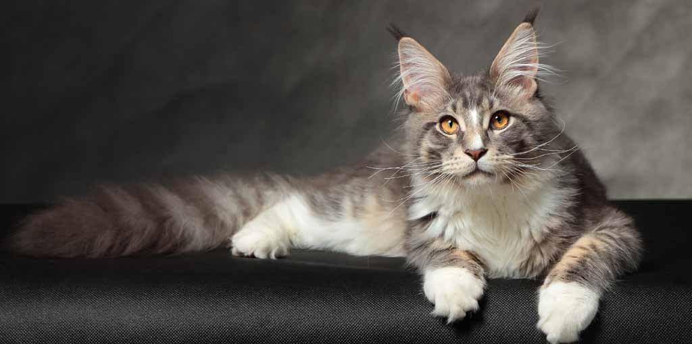
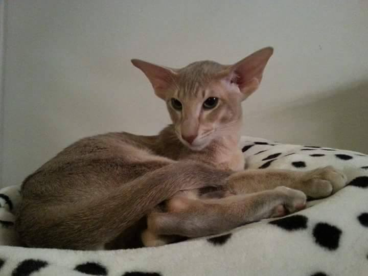
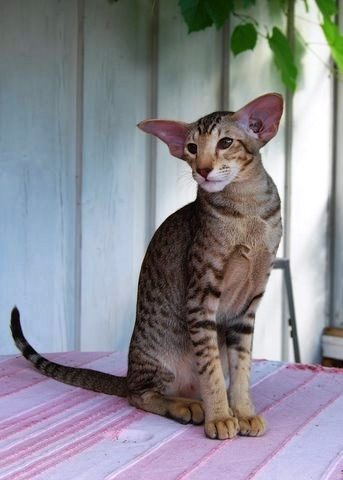

Katter
Jag tycker om alla djur men jag gillar katter väldigt mycket. Detta eftersom de är söta
och jag tycker de är bra sällskap att ha. Jag växte även upp med katter i mitt hem och
det är nog en stor anledning till varför jag gillar dem så mycket.
Därför tänkte jag
berätta lite om några av mina favoriter bland kattraserna, även fast jag gillar alla katter.
Lista över några kattraser jag gillar
Listan har även länkar till kattraserna på sidan Purina
Ragdoll
- Ragdoll är en väldigt lugn och avslappnad katt, och när man lyfter upp de kan de slappna av i kroppen. Därför fick rasen dess namn.
- De har väldigt tjock och ofta lång päls. Har även blå ögon.
- Den kommer ursprungligen från Kalifornien i USA, och de första kattungarna föddes på 1960-talet.

Maine coon
- Maine coon är den största av alla kattraser.
- De är väldigt aktiva katter och vill ha möjligheten till att vara utomhus.
- De är kända för att likna hundar på många sätt.
- Rasen kom till på 1850-talet i delstaten Maine i USA. De fick deras tjocka päls för att klara av de kalla vintermånaderna i Maine.

Orientalisk korthår
- Orientalisk korthår har stora öron och en ganska lång nos.
- De gillar att prata och är väldigt nyfikna.
- Rasen är social och de gillar inte att vara själva. Därför är det bra om det finns annan katt i samma hem så att de aldrig är ensamma.

